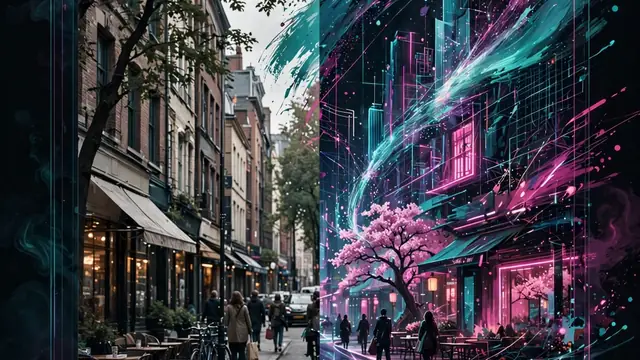
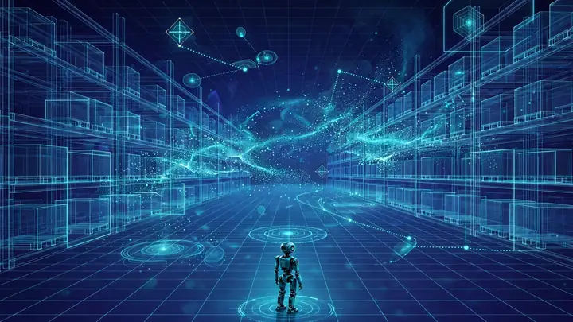

Amazon’s ~$7B Decart talks: the real-time AI video startup that Nvidia and Anthropic both walked away from
The Wall Street Journal reports Amazon is in talks to acquire Israeli AI startup Decart for around $7 billion — months after Nvidia and Anthropic both pursued and abandoned their own deals for the real-time video and world-model company.
- The WSJ reported on Sunday, citing people familiar with the matter, that Amazon is in talks to acquire Decart at around $7 billion — nearly double the valuation from a $300 million round just five months ago; Reuters carried the report, but could not independently verify it.
- Decart's Lucy model edits live video in real time (30 frames per second); Oasis generates simulated environments for training and testing robotics and autonomous-driving systems.
- PitchBook data put Decart's value at nearly $4 billion in May, when it raised $300 million led by Radical Ventures with Nvidia joining as a new investor.
- Decart's last few months: Nvidia (already an investor) entered exclusive talks but they collapsed when a bigger offer appeared; founders Dean Leitersdorf and Moshe Shalev chose Anthropic over Nvidia's higher bid, trading drafts on a mostly-stock ~$7B deal; Bloomberg reported Anthropic walked away in early September after due diligence. SpaceX and Nebius were also linked; Elon Musk denied SpaceX was negotiating.
- The speed pitch: its Decart Optimization Stack (DOS) claims more than 1,600 tokens per second for agentic workloads against an industry average closer to 200; Lucy 2.5 generates live video at 30 fps.
- For Amazon, the fit: AWS bolting generative AI onto Alexa+ and the Rufus shopping assistant, plus a natural fit with Amazon's live-commerce and streaming businesses — though Amazon declined to comment and the talks remain unconfirmed.
Amazon is in talks to acquire Decart, the Israeli AI startup behind the real-time video model Lucy and the robotics-simulation model Oasis, in a deal valued at around $7 billion, the Wall Street Journal reported on Sunday, citing people familiar with the matter. The price is nearly double the valuation Decart fetched in a funding round just five months ago.
Reuters carried the Journal’s report on Sunday. Per Decart’s own website, its Lucy model edits live video in real time, while Oasis generates simulated environments for training and testing robotics and autonomous-driving systems. The Journal cited PitchBook data putting Decart’s value at nearly $4 billion in May, when it raised a $300 million round led by Radical Ventures, with Nvidia joining as a new investor.
The usual caveats apply: Reuters said it could not independently verify the report, Amazon declined to comment outside regular business hours, and Decart did not respond to requests for comment. The Journal’s sources said a deal could come soon — if the talks don’t fall apart or another suitor doesn’t emerge.

The startup everyone wants and nobody has bought
Decart’s last few months read like an auction that keeps restarting. Nvidia — already an investor — entered exclusive talks to buy the company outright, according to Startup Fortune’s account of the saga, but those talks collapsed when a bigger offer appeared. Founders Dean Leitersdorf and Moshe Shalev then chose Anthropic over Nvidia’s higher bid, and the two sides spent weeks trading drafts on an agreement that would have paid out mostly in Anthropic stock at roughly $7 billion, per August reporting from Bloomberg and Reuters. In early September, Bloomberg reported that Anthropic walked away after conducting due diligence.
Earlier still, reports linked SpaceX and the neocloud operator Nebius to interest in Decart — though Elon Musk publicly denied that SpaceX was negotiating. Three different tech giants have now chased the same Tel Aviv startup in under four months, and the asking price keeps climbing even as two of them gave up.
What Amazon is really buying
Decart was founded in 2023, and its pitch is speed as much as video. Its Decart Optimization Stack (DOS) claims to deliver more than 1,600 tokens per second for agentic workloads against an industry average closer to 200, while Lucy 2.5 generates live video at 30 frames per second, the company says. That is why the bidder list reads like companies that need faster inference, not just flashier video: Nvidia wanted it for chip-level optimization, Anthropic reportedly wanted the infrastructure tech and the video capability, and now Amazon.
Amazon has not confirmed the talks publicly. But the strategic fit is easy to sketch: AWS has been racing to bolt generative AI onto everything from Alexa+ to its Rufus shopping assistant, and a claimed multi-fold inference-speed advantage would feed directly into that effort. A real-time video engine also sits naturally next to Amazon’s live-commerce and streaming businesses.

Two walk-aways is a signal, not a verdict
The uncomfortable fact for Decart’s camp: two deep-pocketed buyers with real strategic reasons both got close and didn’t sign. Anthropic’s retreat came after actual due diligence — the stage where pitch decks meet audited numbers — which usually means something in the books didn’t match the story. Integration risk, IP questions, or price discipline ahead of Anthropic’s reported plan to list publicly before Thanksgiving (per Bloomberg’s early-October reporting) could all explain it.
The counterpoint is simpler: a startup jilted twice at $6 billion-plus that still has serious bidders circling is not a company in trouble. It is sitting on something genuinely scarce — working real-time generative video infrastructure, at a moment when every major lab and cloud provider needs exactly that and has the cash to prove it.
If the auction closes with Amazon’s name on the contract, it becomes one of Amazon’s largest AI acquisitions to date — and one more proof point that in this cycle, the biggest balance sheets keep winning the AI shopping spree, even for startups everyone else already tried to buy first. For now, though, it remains what it is: reported talks, unconfirmed, for a startup with a remarkable record of almost being acquired.
Frequently asked questions
What is Amazon reportedly buying?
Decart, an Israeli AI startup founded in 2023 behind the real-time video model Lucy (which edits live video in real time) and the robotics-simulation model Oasis (simulated environments for training and testing robotics and autonomous-driving systems). The reported price is around $7 billion.
Why did Nvidia and Anthropic walk away?
Nvidia entered exclusive talks, but they collapsed when a bigger offer appeared; founders Dean Leitersdorf and Moshe Shalev then chose Anthropic over Nvidia's higher bid. After weeks trading drafts on a ~$7 billion mostly-Anthropic-stock deal, Bloomberg reported Anthropic walked away in early September following due diligence — the stage where pitch decks meet audited numbers. Amazon has not confirmed the current talks.
What is Decart's technical pitch?
Speed as much as video: the Decart Optimization Stack (DOS) claims more than 1,600 tokens per second for agentic workloads against an industry average closer to 200, while Lucy 2.5 generates live video at 30 frames per second, per the company.
Why does Decart fit Amazon?
AWS has been racing to bolt generative AI onto everything from Alexa+ to its Rufus shopping assistant, and a claimed multi-fold inference-speed advantage would feed directly into that effort; a real-time video engine also sits naturally next to Amazon's live-commerce and streaming businesses. If it closes, it would be one of Amazon's largest AI acquisitions to date.